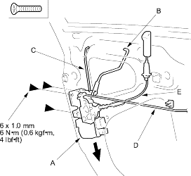
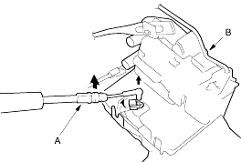
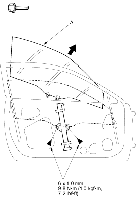

- Remove the screws, then remove the latch (A) through the hole in the door. Take care not to bend the outer handle rod (B), cylinder rod (C), inner handle rod (D) and lock cable (E). Without Super Locking model is shown, with Super Locking model is similar.
Fastener Locations
 : Screw, 3
: Screw, 3

- If necessary, disconnect the lock cable (A) from the latch (B). Without Super Locking model is shown with Super Locking model is similar.

- Install the latch in the reverse order of removal and note these items:
- Make sure the actuator connectors are plugged in property and each rod is connected securely.
- Make sure the door locks and opens property.
- Remove these items:
- Door panel (see page 20-4)
- Plastic cover, as necessary
- Carefully raise the glass (A) until you can see the bolts, then remove them. Carefully pull the glass out through the window slot. Take care not to drop the glass inside the door.
Fastener Locations
: Bolt, 2
